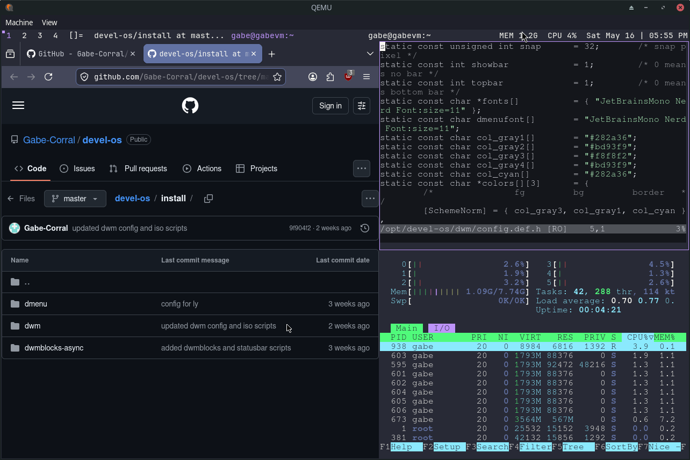
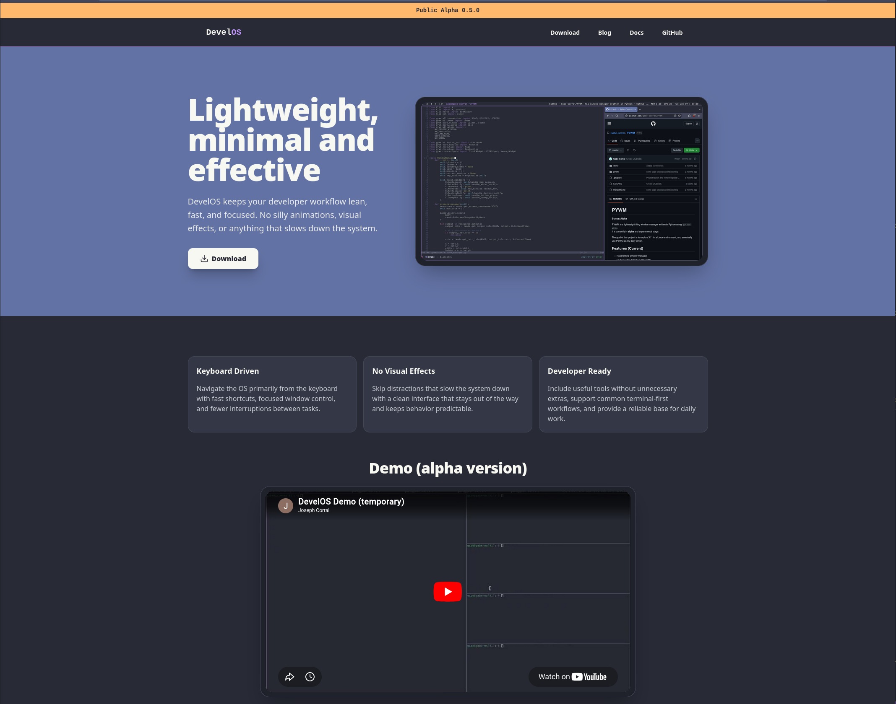
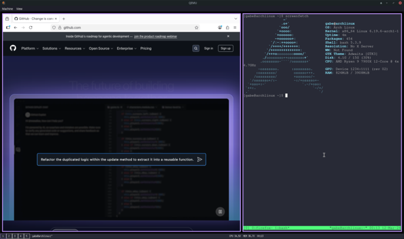
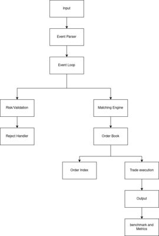
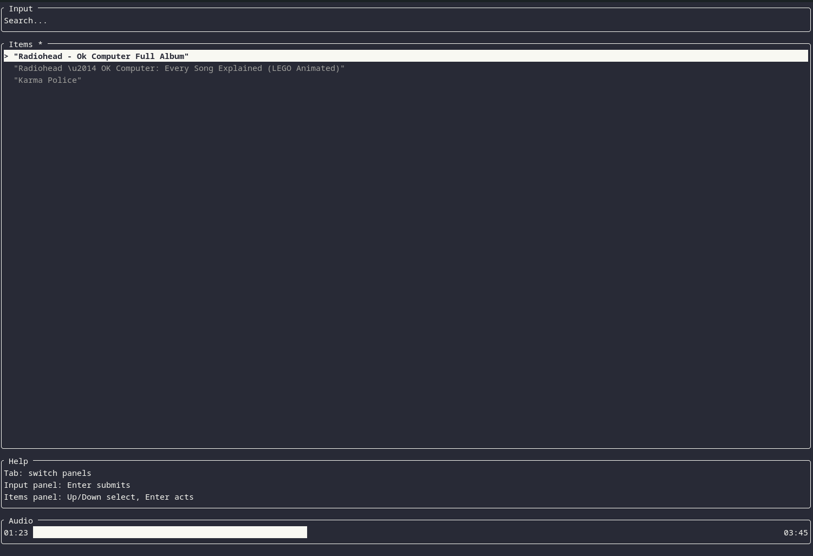
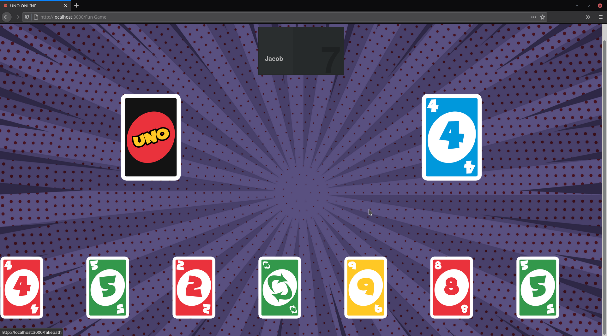

DevelOS
A custom Arch-based development environment built as a reproducible live ISO with a simple installer. Focused on a fast, minimal desktop setup with curated tools and configs that stay out of the way.
- Arch Linux
- dwm
- Shell
- QEMU
Cedar Park, TX
Software Engineer with four years of experience building applications with Python, Django, React, and AWS. Experienced in maintaining Linux servers, troubleshooting production software, and developing backend applications. Strong interest in low-level Linux development and systems programming.
Texas Precious Metals & Texas Depository | Software Developer | 07/2022 - current
Coding with Kids | Coding Instructor | 08/2021 - 07/2022

A custom Arch-based development environment built as a reproducible live ISO with a simple installer. Focused on a fast, minimal desktop setup with curated tools and configs that stay out of the way.

A responsive product site for DevelOS with a download-focused landing page, documentation, and blog content. Built to present the Linux distribution clearly as the project grows.

A Python X11 window manager built with the intention on eventually replacing my current desktop environment/window manager and better understand how X11 works on Linux.

A C++ order book focused on performance and reliability. Built to strengthen C++ skills and learn GoogleTest.

Terminal program that plays YouTube audio. I made this program solely for personal use. I just wanted to have an easy way to play podcasts or music from my terminal.

Clone Labs is a collection of multiplayer mini games. The name comes from the fact that none of the games are original and are mostly rip offs of more well known games. The design is similar to Kahoot/Jackbox and was heavily inspired by Kahoot/Jackbox.